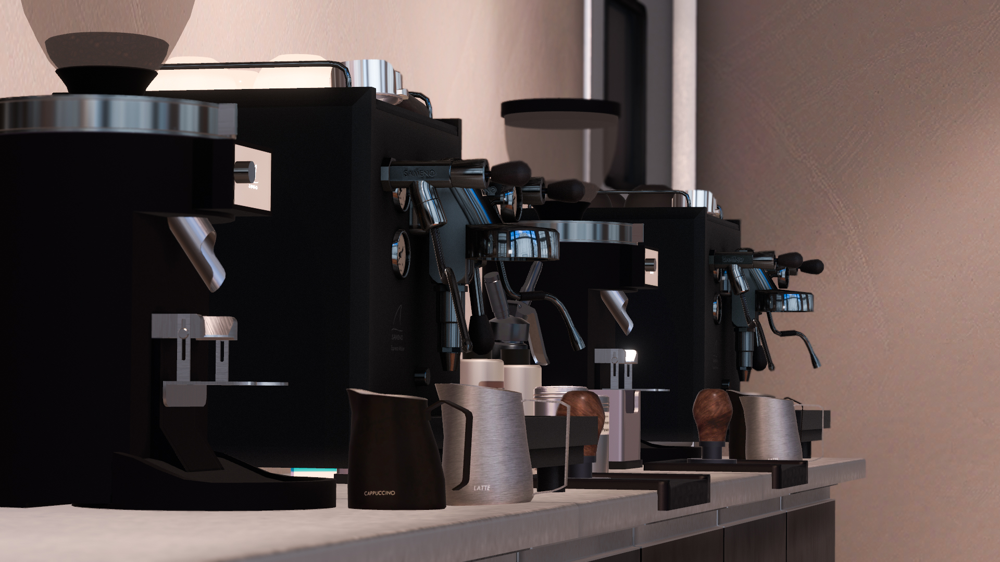

System
独自システム
System 01 Udon Chips導入
本イベントはUdon Chipsが導入されており、店内では所持UdonChipsを使用して商品のやり取りをします。
入場の際に固定Chipsをお渡ししており、滞在時間に影響して増えていきます。うまく活用してお楽しみください。
無銭飲食は禁止とさせていただいております。
System 02 チェキシステム
その場で落書きが出来るチェキを提供しています。
キャストがお客様のために描いた世界に1枚だけのチェキをぜひお持ち帰りください。
System 03 昼夜営業
開催日によって外の景色が昼と夜に変わります。
是非ふたつの顔を見せるカフェをお楽しみください。